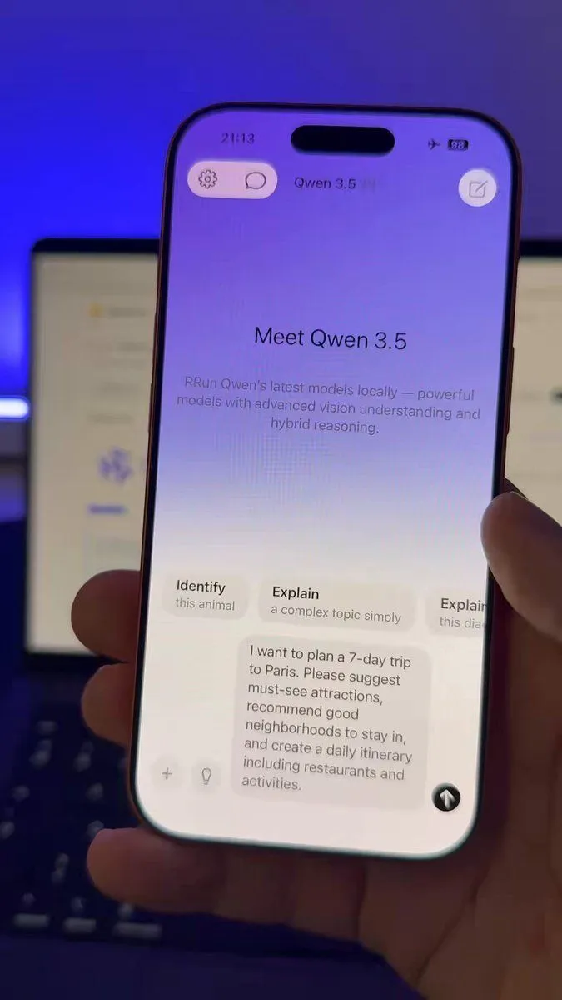

Qwen 3.5 brings a 397B model to local devices
Originally posted on LinkedIn, March 18, 2026.
Alibaba surprised me with Qwen 3.5. The model has 397 billion parameters but activates only 17 billion for each token. That means even an iPhone 17 can run it in airplane mode.
This opens the door to real-time translation, content generation, and personal AI assistants without a cloud connection. It also means fewer subscriptions and more control over private data.
The model is available under the Apache 2.0 license, so anyone can experiment with it. It is part of a broader shift toward distributed AI processing, giving us more control and reducing our dependence on the cloud.
